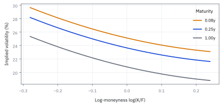
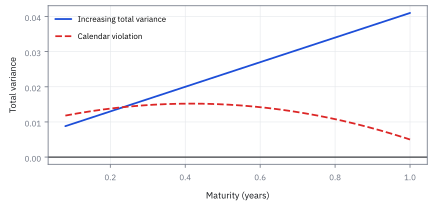
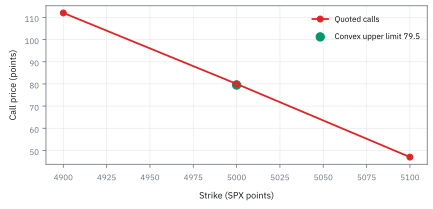

14.5 Hypothesis Testing and Sharpe-Ratio Inference
ถามว่าผลงานดีเกินกว่าจะอธิบายด้วยโชคหรือยัง
กลยุทธ์หนึ่งโชว์ Sharpe ที่สูงจากข้อมูลไม่กี่ปี; ค่าสูงพอให้ปฏิเสธโลกที่ไม่มี skill แล้วหรือไม่?
เฉลย: ยังไม่พอ—Sharpe สูงอาจเกิดจากความบังเอิญใน sample สั้น. hypothesis test แปลงความประหลาดใจนี้เป็นสถิติและเงื่อนไขที่ตรวจได้; p-value เป็นสัญญาณเตือน ไม่ใช่ใบอนุญาตจุดไฟ.
ศัพท์ที่ใช้ในหัวข้อนี้
- null hypothesis
-
คืออะไร: ข้อความที่เราตั้งไว้เพื่อจะพยายามล้มมัน มักเป็นข้อความว่าไม่มีอะไรเกิดขึ้น
ใช้ทำอะไร: เป็นโลกสมมติที่เราคำนวณว่าข้อมูลแบบที่เห็นจะเกิดบ่อยแค่ไหน
ทำไมต้องตั้งข้อความที่เราไม่เชื่อ: เพราะมันเป็นข้อความเดียวที่เจาะจงพอ จะคำนวณอะไรได้ ส่วนข้อความว่ากลยุทธ์นี้ดีนั้นคลุมเครือเกินกว่าจะคำนวณ
- alternative hypothesis
-
คืออะไร: ข้อความที่เราจะยอมรับ ถ้าข้อความข้างบนถูกล้ม
ใช้ทำอะไร: ใช้กำหนดว่าจะดูหางข้างเดียวหรือสองข้างของการกระจาย
ทำไมต้องประกาศก่อนดูข้อมูล: เพราะการเปลี่ยนใจหลังเห็นข้อมูลแล้ว ทำให้โอกาสพลาดที่รายงานไว้ต่ำกว่าความจริง เป็นการโกงตัวเองที่ตรวจจับยาก
- test statistic
- test statistic คือการแปลง estimate เป็นจำนวนที่วัดความสุดโต่งภายใต้ null distribution ใช้เปรียบเทียบผลจากข้อมูลและสร้าง decision rule ที่ตรวจซ้ำได้
- p-value
- p-value คือความน่าจะเป็นภายใต้ null ที่จะเห็น test statistic สุดโต่งเท่าที่เห็นหรือยิ่งกว่า ใช้วัดความเข้ากันได้กับ null ไม่ใช่ความน่าจะเป็นที่กลยุทธ์ไร้ค่า
- Sharpe ratio (SR)
- Sharpe ratio คือ excess return ที่คาดหวังเทียบกับ volatility ของ excess return ใน horizon เดียวกัน ใช้สรุป reward ต่อความผันผวน แต่ไม่ครอบคลุม capacity, tail loss, liquidity หรือ alpha ที่ยั่งยืน
- autocorrelation
- autocorrelation คือความสัมพันธ์ของ return กับอดีตของตัวเอง ใช้ตรวจว่าการ annualize ด้วยรากของเวลาและ standard error แบบ iid ถูกทำให้สวยเกินจริงหรือไม่
- statistical power
- statistical power คือโอกาสที่ test จะตรวจพบ effect ที่มีอยู่จริงภายใต้ขนาด effect และ sample size ที่กำหนด ใช้วางระยะเวลาทดลอง ไม่ใช่ไล่หา p-value หลังจบ
- standard error (SE)
- standard error คือความไม่แน่นอนของ Sharpe estimate เมื่อเก็บ samples ใหม่ ใช้สร้าง interval และวางแผน minimum track-record length
- slippage
-
คืออะไร: ส่วนต่างระหว่างราคาที่คาดว่าจะได้ กับราคาที่ได้จริง
ใช้ทำอะไร: ใช้หักออกจากผลตอบแทน ก่อนนำไปทดสอบทางสถิติ
ทำไมต้องหักก่อนทดสอบ: เพราะการทดสอบตอบแค่ว่าตัวเลขนี้เกิดจากโชคหรือไม่ มันไม่รู้เลยว่าตัวเลขที่ป้อนเข้าไปหักต้นทุนแล้วหรือยัง
- drawdown
-
คืออะไร: ระยะที่มูลค่าพอร์ตลดลงจากจุดสูงสุดที่เคยทำได้
ใช้ทำอะไร: ใช้วัดความเจ็บที่ต้องทนระหว่างทาง
ทำไมถึงสำคัญกว่าค่าเฉลี่ย: เพราะคนเลิกทำตามกลยุทธ์ตอนอยู่ก้นหลุม กลยุทธ์ที่ค่าเฉลี่ยดีแต่หลุมลึกเกินไป จึงไม่มีใครถือได้จนถึงวันที่มันได้ผล
- long
-
คืออะไร: สถานะที่ซื้อไว้ ได้กำไรเมื่อราคาขึ้น
ใช้ทำอะไร: ใช้ระบุทิศของสถานะเวลาคำนวณผลตอบแทน
ทำไมต้องระบุ: เพราะเครื่องหมายของผลตอบแทนทั้งชุดพลิกตามคำนี้ ป้ายผิดคำเดียว กลยุทธ์ที่ขาดทุนจะกลายเป็นกลยุทธ์ที่กำไรในรายงาน
- short
-
คืออะไร: สถานะที่ขายไว้ก่อนโดยยังไม่มีของ ได้กำไรเมื่อราคาลง
ใช้ทำอะไร: ใช้กับกลยุทธ์ที่เดิมพันว่าราคาจะลง หรือใช้เป็นขาป้องกันความเสี่ยง
ทำไมสถิติของมันต่างออกไป: เพราะขาดทุนของมันไม่มีเพดาน การกระจายของผลตอบแทนจึงเบ้ไปคนละทางกับฝั่งซื้อ และสูตรที่สมมติความสมมาตรจะประเมินต่ำไป
- factor
- factor คือแหล่งความเสี่ยงหรือผลตอบแทนร่วม เช่น market, value หรือ momentum ใช้แยก alpha ของกลยุทธ์ออกจาก exposure ที่พอร์ตอื่นก็รับเหมือนกัน
สัญลักษณ์ที่ใช้ในหัวข้อนี้
| สัญลักษณ์ | ความหมาย | หน่วย |
|---|---|---|
| $r_{e,t}$ | ผลตอบแทนส่วนเกินของงวดที่ $t$ คือหลังหักอัตราไร้ความเสี่ยงแล้ว | decimal/period |
| $\bar r_e$ | ค่าเฉลี่ยของค่าข้างบนตลอดช่วงข้อมูล | decimal/period |
| $s_e$ | ความกว้างของค่าข้างบน เป็นตัวหารในอัตราส่วนที่หัวข้อนี้ทดสอบ | decimal/period |
| $\mathrm{SR}$ | อัตราส่วนจริงที่กลยุทธ์มี ซึ่งมองไม่เห็น | ไม่มีหน่วย |
| $\widehat{\mathrm{SR}}$ | อัตราส่วนที่คำนวณได้จากข้อมูล เป็นตัวเลขที่คนเอาไปโฆษณา | ไม่มีหน่วย |
| $T$ | จำนวนปีที่เป็นอิสระต่อกันจริง ตัวที่กำหนดว่าเชื่อตัวเลขข้างบนได้แค่ไหน | years |
| $H_0$ | ข้อความที่ตั้งไว้เพื่อจะล้ม มักคือกลยุทธ์ไม่มีความได้เปรียบเลย | ไม่มีหน่วย |
| $H_1$ | ข้อความที่จะยอมรับถ้าข้อความข้างบนถูกล้ม | ไม่มีหน่วย |
| $t$ | ตัวเลขสรุปที่คำนวณจากข้อมูล ใช้เทียบกับเกณฑ์ | ไม่มีหน่วย |
| $p$ | โอกาสที่จะเห็นข้อมูลสุดโต่งอย่างที่เห็น ถ้า $H_0$ เป็นจริง | ไม่มีหน่วย |
| $\alpha$ | เกณฑ์ที่ประกาศไว้ก่อนดูข้อมูล ห้ามเปลี่ยนทีหลัง | ไม่มีหน่วย |
| $\rho_k,\gamma_k$ | autocorrelation และ autocovariance ที่ lag $k$ ของ return | ไม่มีหน่วย; decimal²/period² |
ที่มาที่ไป: คำถามที่ต้องตอบก่อนใส่เงินจริง
คำถามคือผลงานที่เห็นดีเกินกว่าจะอธิบายด้วยโชคหรือยัง
กรอบคิดสำหรับตอบคำถามแบบนี้ถูกพัฒนาในช่วงต้นศตวรรษที่ยี่สิบ โดยมีสองสำนักที่มองต่างกัน สำนักของ Fisher กับสำนักของ Neyman และ Egon Pearson และการถกเถียงระหว่างสองฝ่ายนั้นดุเดือดมาก
สิ่งที่ทั้งสองฝ่ายเห็นตรงกันคือ ต้องตั้งสมมติฐานตรงข้ามไว้ก่อน แล้วถามว่าข้อมูลที่เห็นค้านมันได้แรงแค่ไหน
ในการเงินมีข้อควรระวังเพิ่มอีกสองข้อที่ตำราสถิติทั่วไปไม่เน้น คือผลตอบแทนแต่ละช่วงไม่เป็นอิสระกัน และเราไม่ได้ทดสอบกลยุทธ์เดียว แต่ทดสอบเป็นร้อยแล้วเลือกตัวที่ผ่าน
ที่มาทางประวัติศาสตร์ — จาก William Sharpe สู่ความจริงเรื่อง sampling noise ของ Andrew Lo
William F. Sharpe เสนออัตราส่วนนี้ในปี 1966 ในบทความชื่อ Mutual Fund Performance โดยเดิมใช้ชื่อว่า reward-to-variability ratio ก่อนที่ทุกคนจะเรียกติดปากว่า Sharpe ratio เพื่อแก้ปัญหาในยุคก่อนหน้าที่นักลงทุนเปรียบเทียบผลตอบแทนดิบโดยไม่คำนึงถึงระดับความเสี่ยง
แต่ตลอดเวลากว่า 35 ปีหลังจากนั้น อุตสาหกรรมกองทุนและนักจัดสรรเงินทุนมอง Sharpe ratio เสมือนเป็นตัวเลข scalar ที่แน่นอน หากกองทุนหนึ่งได้ 1.20 และอีกกองทุนได้ 1.00 ทุกคนจะสรุปทันทีว่ากองทุนแรกเหนือกว่า โดยไม่เคยคำนวณ standard error หรือ confidence interval กำกับไว้เลย
จนกระทั่งราว ๆ ปี 2002 Andrew Lo ตีพิมพ์บทความ The Statistics of Sharpe Ratios ใน Financial Analysts Journal เตือนให้เห็นว่า Sharpe ratio เป็นเพียง estimator ที่คำนวณจาก finite sample ข้อมูลจึงมี sampling noise มหาศาล หาก track record สั้นเพียง 3 ปี ความไม่แน่นอนจะกลบความแตกต่างจนแยกไม่ออกว่าเกิดจากฝีมือหรือโชค
Worked Example — โจทย์และสิ่งที่ให้มา
โจทย์ให้อะไรมาบ้าง: ให้ $r_{e,t}$ เป็น return หลังหัก risk-free rate, fees, borrow, slippage และ financing ณ วันที่ตัดสินใจได้จริง. สำหรับ mandate ที่ต้องการ positive skill ให้ประกาศ $H_0:\mathrm{SR}\le0$ กับ $H_1:\mathrm{SR}>0$ ก่อนเปิด backtest; ถ้าตั้งใจจะพิจารณาสองด้าน ให้ใช้ two-sided test ตั้งแต่แรก
Sharpe ratio มีหน่วยเป็นไม่มีหน่วย แต่ annual Sharpe, monthly Sharpe และ daily Sharpe ไม่ใช่เลขเดียวกันจนกว่าจะระบุ rule การ annualize. สูตรรากเวลาเป็น assumption เรื่อง independence ไม่ใช่ปุ่ม format ใน spreadsheet
ขั้นที่ 1 — ลองด้วยมือ: สามปีเขียวติดกัน พิสูจน์อะไรได้
ตั้งตัวอย่างให้ผลตอบแทนสุทธิรายปีเป็นอิสระ มีรูปสมมาตรรอบศูนย์ และไม่มีมวลโอกาสที่ศูนย์ ภายใต้สมมติฐานนี้จึงได้โอกาสปีบวกเท่ากับหนึ่งส่วนสอง
ในตัวอย่างที่สมมติความสมมาตรและ independence ปีบวกหรือปีลบจึงเหมือนโยนเหรียญ สามปีเขียวติดกันจึงเกิดได้ 1 ใน 8 ไม่ใช่เรื่องแปลกอะไร ห้าปีติดกันเกิดได้ 1 ใน 32 เริ่มน่าสนใจ แต่ยังไม่ใช่หลักฐานแน่นหนา
นี่คือหัวใจของ hypothesis test ในภาษานับนิ้ว: สมมติว่าไม่มีฝีมือ (null) แล้วถามว่าสิ่งที่เห็นเกิดได้บ่อยแค่ไหน ถ้ากำหนดล่วงหน้าว่าดูจำนวนปีบวกจากสามปี ตัวเลข 12.5% คือโอกาสได้สามปีบวกภายใต้ null นี้; mean ศูนย์อย่างเดียวไม่พอทำให้โอกาสปีบวกเป็นครึ่งหนึ่ง
และถ้าทั้งอุตสาหกรรมมี 200 กองทุนที่ไม่มีฝีมือ จะมีราว 25 กองโชว์สามปีเขียวได้โดยไม่ต้องมีอะไรเลย นี่คือปัญหาที่หัวข้อ 14.6 จะจัดการ
บรรทัดแรกสมมติว่าผลตอบแทนรายปีสมมาตรรอบศูนย์และไม่มีฝีมือเลย โอกาสที่ปีหนึ่งจะเป็นสีเขียวจึงเป็นครึ่งหนึ่งพอดี
บรรทัดสุดท้าย: กองทุนที่ไม่มีฝีมือ 200 กอง จะมีราว 25 กองที่เขียวสามปีติด ด้วยความบังเอิญล้วน ๆ ซึ่งเป็นเหตุผลที่สามปีเขียวไม่ได้พิสูจน์อะไร
ขั้นที่ 2 — จาก excess return ไปสู่ test ของ Sharpe
คำถาม 'กลยุทธ์นี้ดีจริงไหม' แปลงเป็นการทดสอบทางสถิติได้ โดยตั้งสมมติฐานตรงข้ามว่ามันไม่มีฝีมือเลย แล้วดูว่าข้อมูลค้านได้แค่ไหน
เริ่มต้นจากสมมติฐาน null ว่ากลยุทธ์ไม่มีฝีมือ ค่าเฉลี่ย excess return จึงเป็นศูนย์ สถิติ $t$ วัดว่าค่าเฉลี่ยที่สังเกตได้อยู่ห่างจากศูนย์กี่ standard errors ของมันเอง
เมื่อกระจายตัวหารที่เป็นเศษส่วนกลับขึ้นมาด้านบน ตัวส่วน $s_e$ รวมเข้ากับเศษกลายเป็น Sharpe ratio ที่วัดได้ ขณะที่ $\sqrt{T}$ พลิกขึ้นมาคูณด้านบนทันที
แทนตัวเลขจริงด้วย Sharpe 1.20 ในเวลา 3 ปี ได้ค่า $t$ เท่ากับ 2.078 ซึ่งให้ p-value สองหางเท่ากับ 3.77% ตัวเลขนี้บอกว่าถ้าโลกนี้ไม่มีฝีมือ โอกาสเกิดผลลัพธ์ที่ไกลขนาดนี้มีราว 3.8%
แล้วเอาไปใช้ทำอะไรได้จริงบ้าง
การถามว่าผลงานดีเกินกว่าจะเป็นโชคหรือยัง เป็นคำถามที่ต้องตอบก่อนใส่เงินจริง
ใช้ตัดสินว่ากลยุทธ์ผ่านเกณฑ์หรือไม่ ด้วยเกณฑ์ที่ตั้งไว้ล่วงหน้า ไม่ใช่ตัดสินหลังเห็นผล
ใช้คำนวณว่าต้องดำเนินกลยุทธ์อีกกี่ปีถึงจะสรุปได้ ซึ่งมักเป็นตัวเลขที่ยาวกว่าที่ทุกคนคาด
ใช้เปรียบเทียบกลยุทธ์สองตัวว่าต่างกันจริงหรือไม่ ไม่ใช่แค่ตัวเลขต่างกัน
ภาพ 14.5a — Sharpe 1.20 ในสามปีอยู่ตรงไหนใต้ null

ถ้า $\widehat{\mathrm{SR}}=1.20$ และ $T=3$, ได้ $t=2.078$ ภายใต้ normal approximation. พื้นที่สองหางเกินค่านี้คือประมาณ $3.77\%$; ผลน่าสนใจ แต่ sample สามปีสั้นพอที่ approximation และ dependence ต้องถูกตรวจเข้มกว่าตัวเลข p-value เอง.
ขั้นที่ 3 — standard error และ interval ของ Sharpe
Sharpe ที่คำนวณได้เป็นแค่ค่าประมาณ ต้องมีช่วงที่ข้อมูลรองรับกำกับไว้ด้วย ขั้นตอนนี้แสดงให้เห็นว่าความไม่แน่นอนมาจากสองแหล่ง ไม่ใช่แหล่งเดียว และแหล่งที่สองจะใหญ่ขึ้นเมื่อ Sharpe สูง ซึ่งเป็นเรื่องที่คนมักลืม
Sharpe ratio เป็น function ของตัวแปรสองตัวคือ mean และ volatility ซึ่งทั้งคู่ได้มาจาก sample เดียวกัน การคำนวณ variance ของมันจึงต้องกระจาย Taylor series รอบค่าจริงตามหลัก Delta Method
derivative เทียบกับ mean ให้ $1/\sigma$ ส่วนเทียบกับ volatility ให้ $-\mu/\sigma^2$ เครื่องหมายลบชี้ว่าถ้า sample ประเมินความเสี่ยงต่ำเกินจริง Sharpe จะพุ่งเกินจริง พจน์ covariance ไขว้ตัดเป็นศูนย์จากความสมมาตร
พจน์แรกตัด $\sigma^2$ เหลือ $1/T$ พจน์หลังจัดรูปเหลือ $\mathrm{SR}^2/(2T)$ ยิ่งกลยุทธ์มี Sharpe สูง ความคลาดเคลื่อนของ volatility ยิ่งขยายความไม่แน่นอนของ Sharpe ขึ้นเป็นเงาตามตัว
แทนตัวเลขจริง 3 ปีได้ standard error สูงถึง 0.757 ทำให้ 95% confidence interval กว้างจนคร่อมศูนย์ แม้ test จะผ่าน 5% เพราะตอน test เราสมมติ null ว่า Sharpe เป็นศูนย์จึงไม่มีพจน์หลัง
คำตอบ ตรวจเอง และแปลว่าอะไร
คำตอบและความหมาย: ถ้า Sharpe estimate เท่ากับ 1.20 จากข้อมูลอิสระ 3 ปี standard error ตาม approximation เท่ากับ 0.757. normal 95% interval จึงอยู่ระหว่าง -0.284 ถึง 2.684. ถ้าใช้ two-sided test กับ null ว่า Sharpe เป็นศูนย์, test statistic เท่ากับ 2.078 และ p-value ประมาณ 3.77%
แต่ test และ interval นี้พึ่ง approximation, sample size และ independence. บน desk ให้มอง statistic เป็นหลักฐานที่ยังเปราะบาง: Sharpe 1.20 ต้องใช้เวลาประมาณ 6.25 ปีจึงมี expected statistic เท่ากับ 3. ใช้เป็น research candidate, run paper trading และเพิ่มขนาดตาม evidence ไม่ใช่ตาม point estimate เดียว
ตรวจเองใน 10 วินาที: ช่วง 95% จาก -0.284 ถึง 2.684 ยังคร่อมศูนย์ จึงห้ามแปล Sharpe 1.20 ว่าเป็นหลักฐานแข็งแรง แม้ p-value โดย approximation จะอยู่ราว 3.77%
ภาพ 14.5b — ความยาว track record เปลี่ยน evidence อย่างไร

เมื่อ Sharpe จริงหรือ estimate ที่วางแผนไว้เท่ากับ 1.20, expected $t=1.2\sqrt T$. เส้นตัด $t=2$ ที่ 2.78 ปี และ $t=3$ ที่ 6.25 ปี; เกณฑ์ที่เข้มขึ้นต้องซื้อด้วยเวลา ไม่ใช่ด้วยการ annualize รายวันซ้ำ ๆ.
ขั้นที่ 4 — dependence เปลี่ยน standard error ก่อนเปลี่ยนคำตัดสิน
ถ้าผลตอบแทนแต่ละงวดไม่เป็นอิสระกัน ช่วงที่คำนวณไว้จะแคบเกินจริง หกบรรทัดนี้แสดงว่าส่วนที่หายไปคือพจน์ไขว้ทั้งหมด ซึ่งเป็นของเดียวกับที่หัวข้อ 6.5 เตือนไว้ตั้งแต่ต้น ต่างแค่ตรงนี้คู่ที่เกี่ยวกันคือคู่ของเวลา ไม่ใช่คู่ของสินทรัพย์
กาง variance ของผลรวมให้ครบ รวมพจน์ไขว้ทุกคู่ ซึ่งเป็นรูปเดียวกับหัวข้อ 6.5 แต่คราวนี้ห้ามทิ้งพจน์ไขว้ เพราะทั้งหัวข้อนี้มีอยู่เพื่อพจน์ไขว้
เขียน covariance ในภาษาของ autocorrelation แล้วนับว่าคู่ที่ห่างกัน $k$ งวดมีกี่คู่ ยิ่งห่างยิ่งมีน้อย นั่นคือที่มาของตัวคูณที่ลดลงตามระยะห่าง
ส่วนด้วยจำนวนงวดกำลังสองเพื่อกลับมาเป็นค่าเฉลี่ย ตัวคูณในวงเล็บคือส่วนเกินที่หายไปทั้งก้อน ถ้าเผลอสมมติว่าไม่เกี่ยวกัน
แทนเลขจริง ถ้าความเกี่ยวพันจางลงครึ่งหนึ่งทุกงวด ตัวคูณเป็นสามเท่า ความกว้างจึงโต 1.732 เท่า และค่า $t$ ที่รายงานไว้ต้องส่วนด้วยเลขนั้น กลยุทธ์ที่ดูผ่านเกณฑ์อาจไม่ผ่านเลย
ภาพ 14.5c — smoothing ทำให้ Sharpe ที่รายงานดูสูงเกิน

สำหรับ first-order autocorrelation แบบง่าย, factor ของ standard error ระยะยาวโดยประมาณคือ $\sqrt{(1+\rho)/(1-\rho)}$. ที่ rho=0.5 standard error เพิ่มรากที่สองของ 3 เท่า; monthly returns จาก illiquid marks จึงไม่ควรได้ประโยชน์จาก annualization แบบ iid ฟรี ๆ.
ภาพ 14.5d — annualization ต้องระบุสมมติฐาน

เส้นน้ำเงินคือ scaling $\sqrt A$ สำหรับ periodic Sharpe 0.10 เมื่อ returns อิสระ. เส้นแดงลดลงด้วย autocorrelation $\rho=0.3$ แบบ long-run approximation; การรายงาน annual Sharpe หนึ่งตัวโดยไม่บอก frequency และ dependence ทำให้ผู้รับรายงานตรวจเหตุผลไม่ได้.
ขั้นต่ำของ Sharpe-inference report
| field | ต้องล็อกก่อนดูผล | ตัวอย่าง |
|---|---|---|
| null and sidedness | $H_0$ และ one/two-sided | $\mathrm{SR}\le0$, one-sided |
| return definition | risk-free, costs, borrow, currency | net USD excess return |
| horizon | period, $T$, annualization rule | monthly, 3 independent years |
| dependence method | iid, long-run variance, block bootstrap | block bootstrap 20 days |
| decision | threshold and action | $t \lt 3$: paper trade only |
การทดสอบ Sharpe เดี่ยวไม่แก้ data mining; research log ต้องส่งจำนวน strategy variants ไปบท 14.6
กับดัก: p-value ต่ำไม่ใช่ risk budget
p-value ไม่ใช่โอกาสที่ $H_0$ จริง, ไม่ใช่ขนาดของ alpha และไม่ใช่โอกาสที่ strategy จะทำเงินเดือนหน้า. ผลที่มี statistical significance ยังอาจ capacity ต่ำ, ขาดทุน tail หนัก, ใช้ leverage สูง หรือเกิดจาก survivorship and selection. ผลที่ไม่ผ่าน threshold ก็อาจมี economic value แต่ evidence ยังไม่พอ
ความเสี่ยงที่พบบ่อยคือ stale prices และ overlapping holdings ทำให้ $s_e$ ต่ำและ $T$ ดูสูงเกินจริง. ใช้ executed returns, ตรวจ autocorrelation, run block bootstrap, impose leverage and drawdown limits และ freeze rule ก่อน test out-of-sample. จากนั้นจึงถามว่าทีมลองกี่กฎก่อนเจอ Sharpe นี้.
ข้อจำกัด: วิธีนี้สมมติอะไร และของจริงเป็นอย่างไร
| เรื่อง | วิธีนี้สมมติว่า | ของจริงเป็นอย่างไร | ผลที่ตามมาเวลาใช้งาน |
|---|---|---|---|
| independence | ผลตอบแทนแต่ละช่วงไม่เกี่ยวกัน | เกี่ยวกัน โดยเฉพาะกลยุทธ์ที่ถือยาว | ความคลาดเคลื่อนที่คำนวณได้ต่ำเกินจริง จึงสรุปว่าเก่งทั้งที่หลักฐานไม่พอ |
| การตั้งเกณฑ์ล่วงหน้า | ตั้งเกณฑ์ก่อนดูข้อมูล | คนมักปรับเกณฑ์หลังเห็นผลแล้ว | การทดสอบเสียความหมายทันทีเมื่อทำแบบนั้น |
| การทดสอบครั้งเดียว | ทดสอบกลยุทธ์เดียว | เราทดสอบเป็นร้อยแล้วเลือกตัวที่ผ่าน | ค่าที่ได้ไม่มีความหมาย ต้องปรับด้วยวิธีในหัวข้อ 14.6 |
แถวล่างเป็นเหตุผลที่ผลงานวิจัยกลยุทธ์จำนวนมากซ้ำไม่ได้ในการใช้งานจริง
ก่อนไปต่อ — สู่ multiple testing
hypothesis test ข้างต้นสมมติว่าเราเลือก hypothesis หนึ่งข้อก่อนเห็นข้อมูล. เมื่อ research ลอง lookback, universe, signal transform และ stop rule หลายแบบแล้วเก็บผู้ชนะ $p=0.0377$ ไม่ใช่หลักฐานเดิมอีกต่อไป. บท 14.6 จะนับ search space และควบคุม false discoveries.
สรุปที่ใช้ได้จริง
- Sharpe ratio เป็น estimate ที่ต้องมี return definition, period, annualization rule และ dependence treatment.
- Sharpe 1.20 ในสามปีให้ $t=2.078$ แต่ interval ของ Sharpe ยังครอบศูนย์ภายใต้ approximation ที่ใช้.
- autocorrelation บวกลด effective sample size และทำให้ iid annualization มองโลกดีเกินจริง.
- p-value เป็นความเข้ากันได้กับ null; ไม่ใช่ alpha, capacity, tail-risk approval หรือ probability ที่ strategy ดีจริง.